This review is dedicated to my dear friend, hors. All photos were taken on my iPhone because this review was not requested until after I left home without my camera.
I had the experience of visiting Chuck E Cheese for the first time since around 2000 on the 6th. The entrance had a few massive posters that were marked ©1995. Surely there must be a stockpile of these because they did not look aged beyond dated art style.
We were greeted by a woman who told us to take out a smartphone so we could take a picture of our party. After seeing we had no children with us, she let us pass with no photo but told us to check out with the cashier when we left.
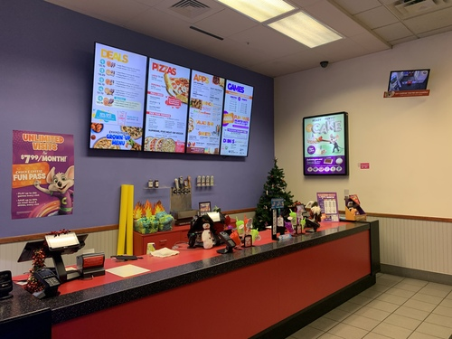The first thing you walk into is the front counter. The prices for the food are premium. The price for a large cheese starts at $21.49. Each meat topping raises the price by $2.59 and each non meat topping is $2.09 extra. If you don't want a cheese pizza and don't want to choose your toppings, they have an option for supreme, five meat, veggie, or BBQ chicken for $27.49. The pizza was thin crust and Ryan's dad rated it as a $15 pizza. Ryan rated it as "below Little Caesar's". Access to the salad bar is $11.49. They have a few more options, but if you're at Chuck's, this is all you'll be interested in.
The cost for points is between $.63 and $.22, depending on quantity. These cards appear to cost $2 to buy in addition to the funds you load on to them. This wasn't listed on the menu, but I did see it on the receipt. For this season only (allegedly), each game only costs 1 point to play. I won't be coming back next season to confirm.
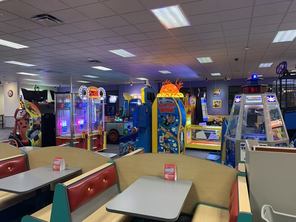 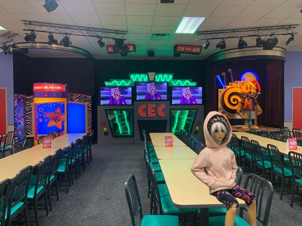The restaurant had some very dated wall art of happy children in a rotoscoped style marked ©2005. I would go as far to say this art was very bad and I need to go back in time to get a job as an artist for Chuck E Cheese.
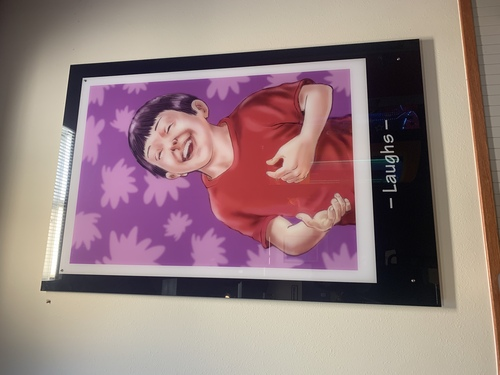 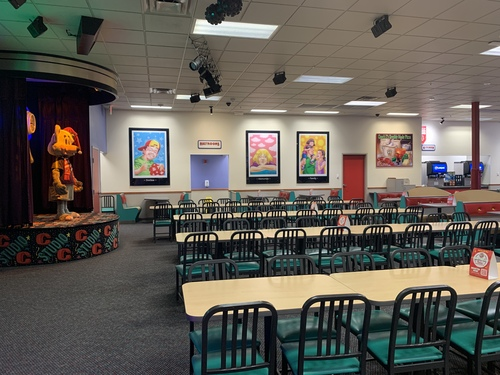 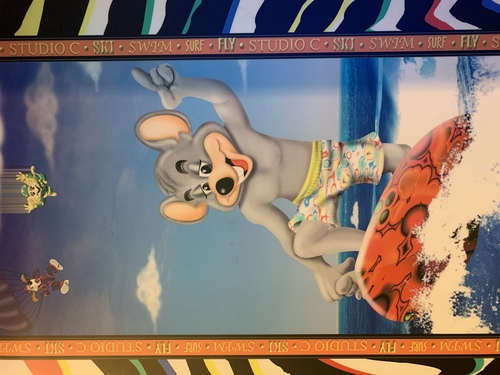I immediately ran up to what appeared to be an animatronic Chuck! He was wearing his Santa hat and scarf already. I then realized the restaurant was playing Christmas music... Please stop this madness.
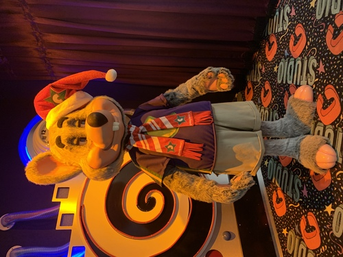All of the games now take NFC/RFID cards as payment instead of coins. I recalled a few games that require coins to play the game, and there were 2 of these games, but they appear to be modified to shoot coins using your game pass as payment. There are no more prize tickets. Everything appears to be stored on the cards (or a database). I definitely don't suggest looking into exploiting this.
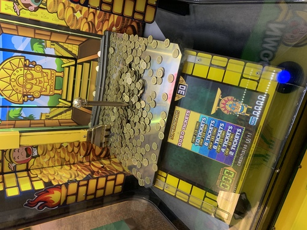 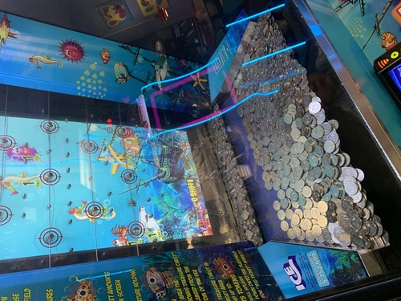 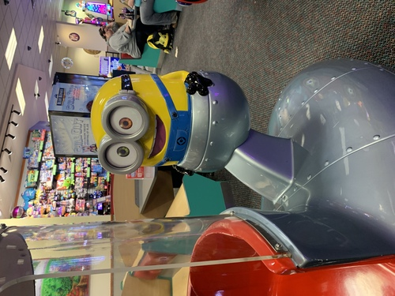Ryan and I played Pop'n. We could only get 2 prize tickets per play, but we did have a 3 year old handicap covering one button.
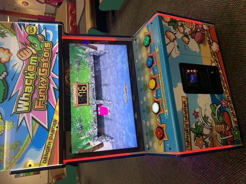Punch a clown game?!
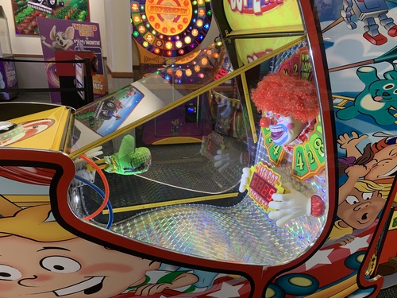My favorite games were the camera toys. I remembered the one where you sat next to Chuck in the car and really wanted to use it! Fortunately, someone bought a $35 pizza and gave us a play card so we got to try it out. It was very hard to get a photo! I had to lay across Chuck's lap like the spicy woman I am and Ryan was hunched over the front of the car. Both of us had our heads cut off in the resulting photos! The machine is not very nice and didn't make it clear when exactly the camera was shooting.
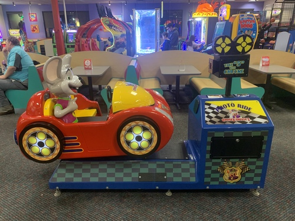My other favorite booth was the sketch booth. Ryan and I used it together twice! This one does warn you about timing and where to look.
The prize corner had lots of brightly colored trash. Based off Ryan's ticket income from the Pop'n machine, I think we should just stop by Walmart on the way home because we cannot afford anything here! Each prize on the wall cost 1500 to 8000 tickets. There were quite a few Chuck branded items up there that were prices in USD. Much better value.
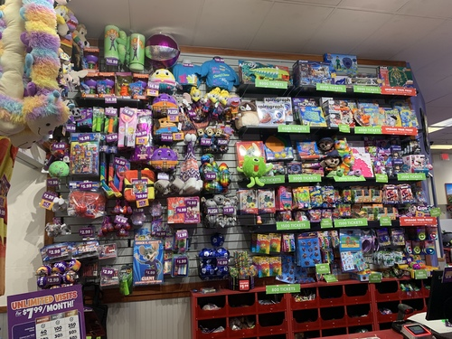This bottom case had items that could be bought for less than 500 tickets. The cheapest items were 15 tickets.
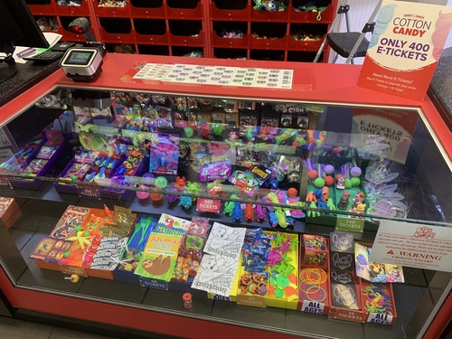A big announcement on the screens by the stage told us to all get ready for Chuck's yuletide slide! I excitedly took my seat by the animatronic Chuck and waited for it to begin.
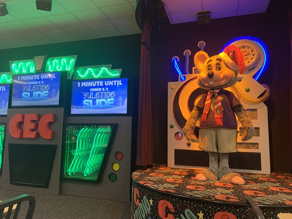As the counter arrived at 0, our animatronic Chuck did not move. Instead, the "SPRINKLER RISER ROOM" door opened, and Chuck walked out! Chuck walked around the establishment with his handler for around 5 minutes before heading back to the SPRINKLER RISER ROOM. On his way back home, he motioned to see my itabag and made heart hands when I showed him. Thank you, Chuck.
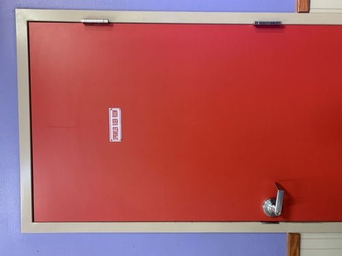I will choose to keep this franchise a secret from my firstborn son, Jeremiah Johnson. 3 seems to be the perfect age to bring a child to this establishment. It is just old enough to have fun while not realizing the game isn't playing. There is a risk of the child asking to come back when it is able to recognize when the game is playing, and it will be costly. I will likely never be able to return to this place anyway. Ryan and his dad decided we were leaving without letting anyone on the staff know. I fully expect to be escorted out next time I visit, but this is the price you pay for not following instructions at Chuck E. Cheese.
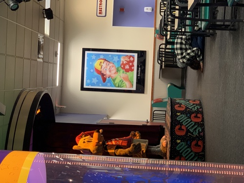Inshallah, they find him.